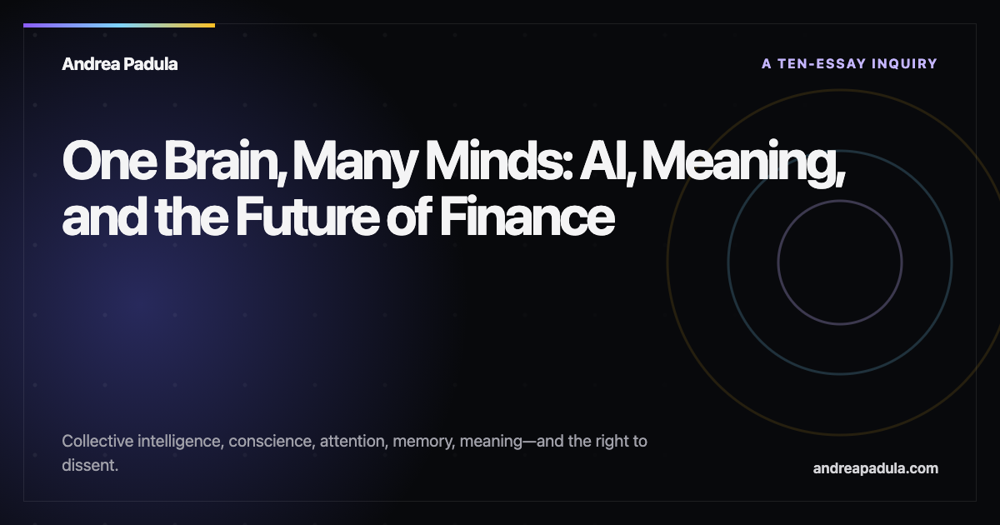
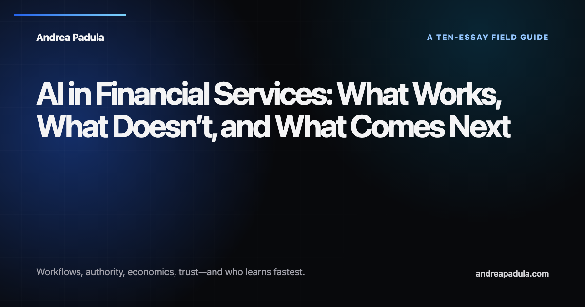

One Brain, Many Minds
Collective intelligence, conscience, attention, memory, meaning, trust, and dissent in an AI-shaped financial system.
Read the seriesAndrea Padula · AI & Financial Services
I connect Silicon Valley execution with European banking realities—across partnerships, governance, and the work between pilot and production.

Current thesis
Finance is becoming a connected intelligence. The task is to make institutions think together without making them think alike.
Explore the ten-essay inquiry“The question is not whether AI becomes conscious. It is whether our institutions become more conscientious.”
From the One Brain, Many Minds series
What makes AI work in finance—and what keeps intelligence human.

Collective intelligence, conscience, attention, memory, meaning, trust, and dissent in an AI-shaped financial system.
Read the series
What creates value, what fails in production, and where banking and wealth management go next.
Read the seriesThree essays that define the point of view.
Accuracy demonstrates capability. Trust requires aligned intent, transparency, consistency, and remedy.
Workflow redesign, permissions, controls, and adoption determine whether a capable model creates value.
Europe is not merely slow. In regulated finance, care can become a competitive advantage.
My perspective comes from working between financial institutions and technology companies: across European banking, Silicon Valley, the Middle East, and Asia.
About AndreaI talk with financial institutions, technology teams, partners, and media about what moves AI from promise to practice.